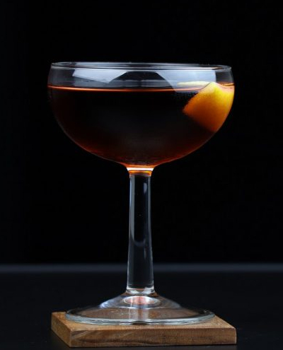

Hanky Panky

Ingredientes:
45 ml de gin
45 ml de vermute doce
2 dashes de Fernet-Branca
Casca de laranja para decorar
Modo de preparo:
Encha um copo misturador com gelo.
Adicione o gin, o vermute doce e o Fernet-Branca no copo misturador.
Mexa suavemente os ingredientes com uma colher de bar por cerca de 20 a 30 segundos para misturar bem e resfriar a bebida.
Use um coador para despejar o coquetel em uma taça de coquetel previamente resfriada.
Exprema o óleo da casca de laranja sobre o coquetel, torcendo-a sobre a bebida para liberar os óleos cítricos.
Use a casca de laranja torcida para decorar o coquetel.
Sirva imediatamente e desfrute do seu Hanky Panky!
O Hanky Panky é um coquetel clássico e elegante, com um toque de amargor e complexidade fornecido pelo Fernet-Branca.
Experimente esta receita única e aprecie o sabor sofisticado do Hanky Panky!